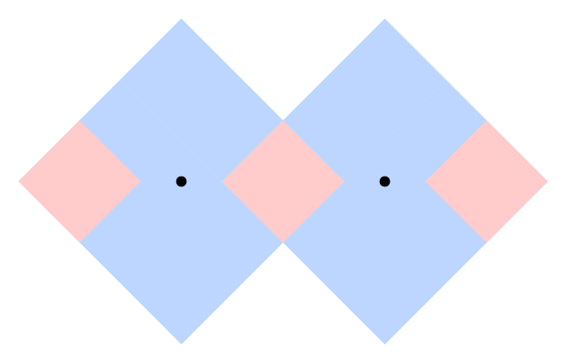
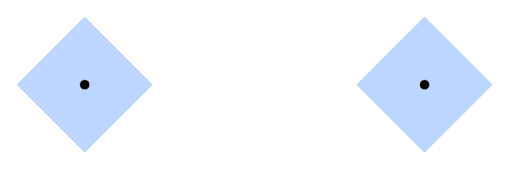
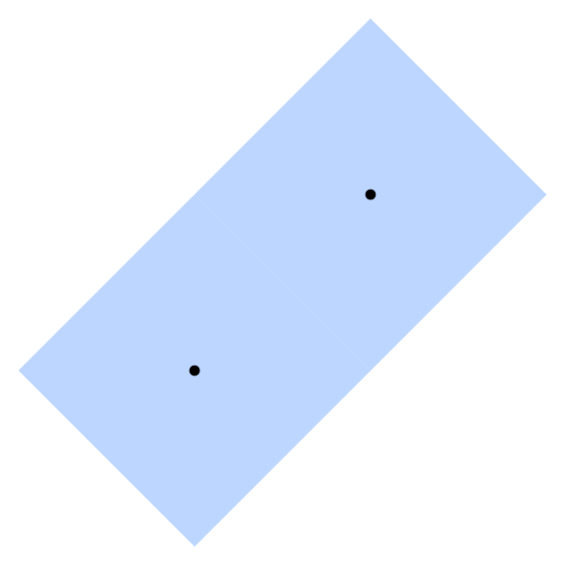
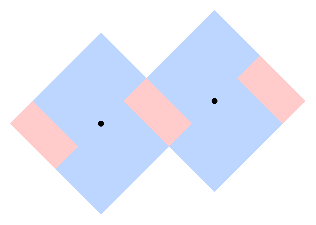
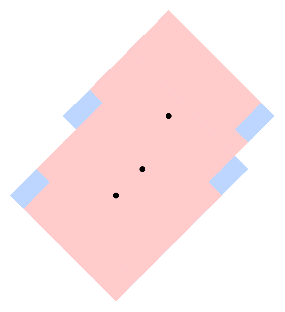

You are working for the Driverless Direct Delivery Drone Directions Design Division of Apricot Rules LLC. The company is about to take its first drone "Principia" to market. You are tasked with designing backup systems for Principia, in case it loses access to its primary geolocation systems (like GPS), but it still needs a way to get directions. Principia is designed for use on a flat region; formally, the region is a Cartesian plane in which the coordinates are in meters. One or more points on this plane are drone repair centers. No two drone repair centers are at the same location.
Principia has a system that can retrieve the relative locations of drone repair centers that are within an L1 distance (which is also known as Manhattan distance) of at most D meters of its location. The information retrieved is a set of repair center locations relative to Principia's current location. For example: "there is a repair center 4 meters north and 3.5 meters west, and another one 2.5 meters east". Notice that the information does not identify repair centers; it gives their locations relative to Principia.
You quickly realized that there may be points on the map where this information may not be enough for Principia to uniquely determine its current location. This is because there might be two (or more) different points from which the information looks the same. Points with this property are called non-distinguishable, while all other points are called distinguishable.
Formally, the information retrieved by Principia when located at point (x, y) is Info(x, y) := the set of all points (z - x, w - y), where (z, w) is the location of a repair center and |z - x| + |w - y| ≤ D. Here |z - x| and |w - y| denote the absolute values of z - x and w - y, respectively. A point (x1, y1) is non-distinguishable if and only if there exists another point (x2, y2) such that Info(x1, y1) = Info(x2, y2).
For example, suppose D=4 and there are repair centers at points (0, 0) and (5, 0). The point (0, 0) is non-distinguishable because Info(0, 0)={(0, 0)}=Info(5, 0). This means that point (5, 0) is also non-distinguishable. On the other hand, Info(3.5, 0.1)={(-3.5, -0.1), (1.5, -0.1)} is not equal to the information from any other point, which means that point (3.5, 0.1) is distinguishable. The following picture illustrates the regions of distinguishable points (in red) and non-distinguishable points (in blue):

Principia is deployed to a point that is chosen uniformly at random from the set of all points that are within D meters (using L1 distance) of at least one repair center — that is, the set of all points (x, y) such that Info(x, y) is non-empty. The probability of that choice belonging to a given continuous set of points S is proportional to the number of square meters of S's area. In the example above, each red square has an area of 4.5 square meters, while each blue section has an area of 23 square meters. Therefore, the probability of Principia being deployed within each red square is 4.5/(3×4.5 + 2×23) and the probability of it being deployed within each blue section is 23/(3×4.5 + 2×23). Since the border between adjacent differently-colored sections has area equal to 0, the probability of Principia being deployed exactly on the border is exactly 0.
Given the locations of all repair centers, what is the probability that the point to which Principia is deployed is distinguishable?
The first line of the input gives the number of test cases, T. T test cases follow. Each test case starts with a line containing two integers N and D representing (respectively) the number of repair centers and the maximum L1 distance from which Principia can retrieve information from a repair center, as described above. Then, N lines follow. The i-th of these contains two integers Xi and Yi representing the coordinates of the i-th repair center. The unit of measurement for all coordinates and D is meters.
For each test case, output one line containing Case #x: y z, where x is
the test case number (starting from 1) and y and z are non-negative
integers. The fraction y/z must represent
the probability of Principia being at a distinguishable location,
if one is chosen uniformly at random from all locations that are
within D meters of at least one repair center (using L1 distance).
If there are multiple acceptable values for y and z, choose
the one such that z is minimized.
Memory limit: 1GB.
1 ≤ T ≤ 100.
1 ≤ D ≤ 107.
-109 ≤ Xi ≤ 109, for all i.
-109 ≤ Yi ≤ 109, for all i.
(Xi, Yi) ≠ (Xj, Yj) for all i ≠ j.
(No two repair centers share the same location.)
Time limit: 20 seconds.
N = 2.
Time limit: 60 seconds.
2 ≤ N ≤ 10.
Time limit: 120 seconds.
For 6 cases, N = 1687.
For T-6 cases, 2 ≤ N ≤ 100.
4 2 4 0 0 5 0 2 1 0 0 5 0 2 4 0 0 4 4 2 4 0 0 5 1
Case #1: 27 119 Case #2: 0 1 Case #3: 0 1 Case #4: 1 5
The above cases meet the limits for Test Set 1. Another sample case that does not meet those limits appears at the end of this section.
Sample Case #1 is described and depicted in the statement.
The points in the middle red region are all distinguishable points because they are the only points that retrieve information from both repair centers, and each point in that region retrieves a distinct set of information.
The points in the left and right red region each receive information from only one repair center, but that information is always unique, so these are all distinguishable points. For example, if Principia knows it is 3 meters east of a repair center, it can be sure it is not 3 meters east of the repair center at (0, 0), because then it would have retrieved information from both repair centers. So it must be 3 meters east of the repair center at (5, 0).
The points in the blue regions are all non-distinguishable points. Choose any point in one of those regions, and consider the information that Principia would get from that point. It contains only the one repair center in range. But, there is a corresponding point in the other blue region from which Principia would get exactly the same information.
As explained above, the probability of Principia being deployed to one of the red sections is 4.5/59.5, so the total probability of it being deployed to any of them is 3×4.5/59.5 = 27/119.
The following picture illustrates Sample Case #2. There is no way to retrieve information from
more than one repair center, so every point close enough to one of them is non-distinguishable;
the same information is retrieved from an equivalent point near the other one.
Remember that z (the denominator) must be minimal, so 0 1 is
the only acceptable answer.

The following picture illustrates Sample Case #3. Notice that the border between the two blue squares consists of distinguishable points. However, since its area is 0, the probability of Principia being deployed there is 0. All other points where Principia can be deployed are non-distinguishable.

The following picture illustrates Sample Case #4.

The following picture illustrates the additional case.

The following additional case could not appear in Test Set 1, but could appear in any of the other test sets.
1 3 4 0 0 1 1 2 3
The correct output is Case #1: 101 109.